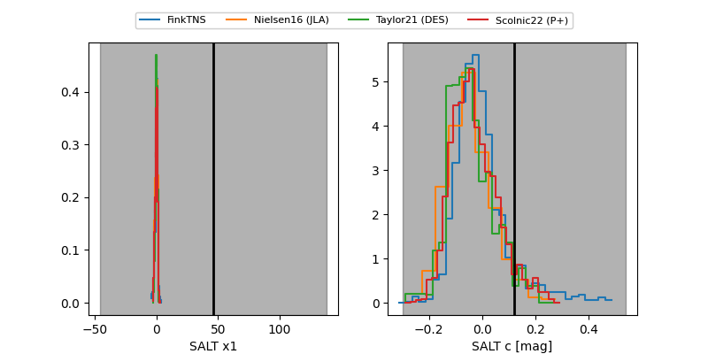

FINK: ZTF25abqqkpu
Lasair: ZTF25abqqkpu
ALeRCE: ZTF25abqqkpu
TNS: 2025xuk
YSE: 2025xuk
ZTF25abqqkpu (ztf,fink)
2025xuk (tns,yse)
equatorial (ra, dec) = (67.1953,-19.74763)
galactic (l, b) = (216.7095,-39.97427)

last ztfg=19.76, ztfr=19.52
1 ztfg, 2 ztfr detections